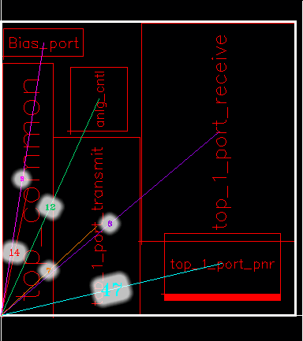
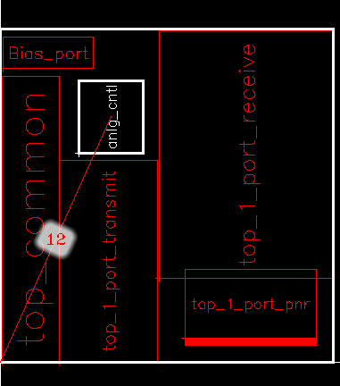
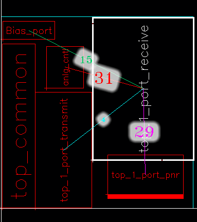

Methods for Analyzing Connectivity
Instead of selecting individual instances, you can also:
-
Select the PR boundary and analyze its connectivity. Connections from the design to all the instances in the design are considered, as shown below:
 -
Select the PR boundary and one or more instance and analyze their connectivity. Connections between the design and the selected instances are considered, as shown below:
 -
Select a figGroup and analyze its connectivity. All connections to the selected figGroup are considered, as shown below:

If an instance, figGroup, or PR boundary was not selected before choosing the Analyze command, the following message appears in the CIW.
*WARNING* VFP-4005: Could not analyze connectivity because neither the PR boundary nor any instance was selected. Select the PR boundary or the required instances, and rerun the command.
If you select only a single instance, Analyze displays all the instances and figGroups connected to that instance.
Certain designs may have a high number of connections between nets and insTerms. Before analyzing the connectivity in such designs, ensure that the number of connections of each net to instTerms is within the maximum terminals per net threshold value. If the value exceeds the threshold value, the corresponding net is ignored during computation of connectivity, and an INFO message is populated in the CIW for the corresponding net.
The adpEnvPinsPerNetThreshold variable defines the maximum terminals per net threshold value. Use the adpnlSetEnv API to set the adpEnvPinsPerNetThreshold variable such that the maximum number of terminals per net threshold value is higher than the number of connections of nets to instTerms in your design.
Related Topics
Return to top